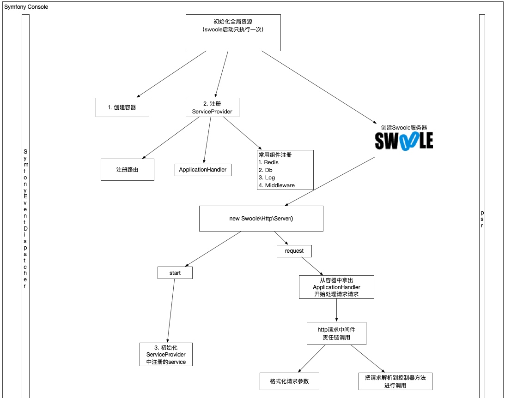
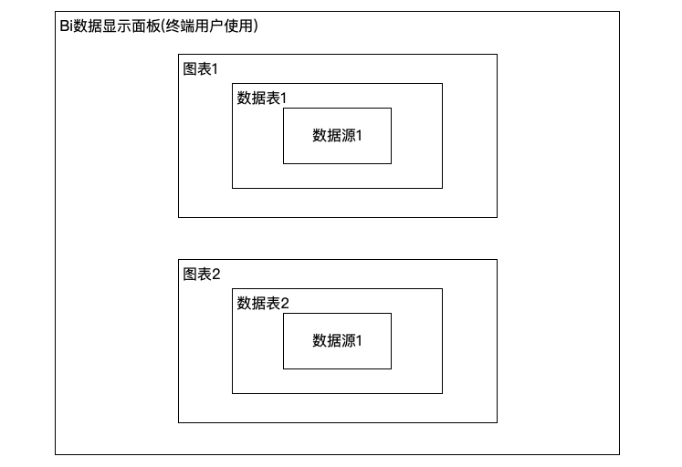

lnmp一键安装包源码分析
通过分析这个lnmp一键安装包的shell脚本，可以了解下shell语言如何有条理的组织大量的代码
项目地址：https://github.com/oneinstack/lnmp
shell脚本在执行运维和自动化任务时经常用到，在解决服务器问题时非常有用
目录结构
| 目录 | 作用 |
|---|---|
| config | nginx服务器里的预定义配置文件 |
| include | 执行实际安装任务的函数定义 |
| src | 下载的源码存放的目录 |
| tools | 执行数据库备份等任务的小工具合集 |
| 根目录 | 入口文件存放目录、安装入口文件install.sh、卸载入口文件uninstall.sh等 |
初始化过程分析
export PATH=/sbin:/bin:/usr/sbin:/usr/bin:/usr/local/sbin:/usr/local/bin
clear
printf "
#######################################################################
# OneinStack for CentOS/RedHat 6+ Debian 8+ and Ubuntu 14+ #
# For more information please visit https://oneinstack.com #
#######################################################################
"
# Check if user is root
[ $(id -u) != "0" ] && { echo "${CFAILURE}Error: You must be root to run this script${CEND}"; exit 1; }
oneinstack_dir=$(dirname "`readlink -f $0`")
pushd ${oneinstack_dir} > /dev/null
. ./versions.txt
. ./options.conf
. ./include/color.sh
. ./include/check_os.sh
. ./include/check_dir.sh
. ./include/download.sh
. ./include/get_char.sh
gogs，jenkins配置通过openldap用户系统进行登录
持续集成的工具链非常多(比如jenkins, gogs, jira, confluence, sonarqube等)，每个系统管理一份用户密码显然是工作量巨大的，配置通过openldap进行登录可以显著减少帐号管理的工作量
下面拿gogs，jenkins举例，配置通过openldap进行联合登录
启动openldap服务器
使用docker工具进行启动，openldap镜像参考：https://github.com/nickstenning/docker-slapd
git clone https://github.com/nickstenning/docker-slapd.git
然后进行docker镜像构建
docker build -t slapd .
操作效果如下

编写docker-compose.yml进行容器管理
基于swoole框架进行二次封装，php高性能业务框架编写思路
swoole已经是php高性能服务器事实标准，可以参考这个博客使用swoole开发业务框架
项目地址：https://github.com/neatlife/pframework
欢迎star，欢迎pr
⁃ 框架执行的核心流程图如下（右键可查看大图）：

- 通用组件尽量遵守psr进行实现，以提高对三方组件的兼容性
- 事件驱动
全局变量适配
swoole是从命令行启动，常驻进程运行，web请求处理依赖的全局变量比如 \(_SERVER, \)_GET, \(_POST, \)_FILES等不会随着每次请求的改变填上对应的值，swoole把这个每次请求的变量放在了Swoole\Http\Request对象中
dotenv 2到3版本设计模式重构实战分析
老大说了这个dotenv的重构比较适合用来学习，进行了分析，并分享了出来
github项目地址: https://github.com/vlucas/phpdotenv
dotenv是一个php写的从文件中加载环境变量的库，库本身文件数量较少，比较容易阅读。
核心api变动
2.x实例化方式
$dotenv = new Dotenv\Dotenv(__DIR__, 'myconfig');
$dotenv->load();
3.x实例化方式
$dotenv = Dotenv\Dotenv::create(__DIR__, 'myconfig');
$dotenv->load();
静态工厂方法设计模式应用
这个3.x版本create方法创建对象使用的是工厂方法设计模式
核心实例化dotenv对象由手动调用构造方法重构成了静态工厂方法，这个改变是因为这个dotenv加载.env文件需要判断env文件、envFactory对象是否传递，而这个判断是个if else的逻辑，根据构造方法不宜写逻辑定理，如果不使用静态工厂方法进行重构，那么在new DotEnv之前，必须手动判断.env是否存在。在多次实例化这个Dotenv对象时，必然造成代码重复。
通过工厂方法封装创建对象的逻辑，以避免创建对象的代码重复，是非常常见的一种设计模式的最佳实践
apache商业智能系统superset使用报告
最近公司有bi的需求，安排我收集了阿里云的quickbi、apache、airbnb的superset、和metabase系统的资料，个人觉得superset还不错，就来了个简单上手了
supeprset是airbnb开源到apache的商业智能项目，目前正在apache里孵化，以后可能成为apache的顶级项目
项目地址：https://github.com/apache/incubator-superset
bi数据显示面板由数据图表组成，数据图表里的数据来自数据库里的表，数据库里的表来自配置的数据源，关系如下所示

三分钟上手scikit-learn机器学习算法库
公司在使用这个库做某个项目的机器学习子项目，用于商品补货预测的机器学习应用，了解了下，发现这个库虽然不支持分布式并行运行，但是有spotify、evernote等公司在背书使用，应该还是可以，可以了解下
完整代码已上传github：https://github.com/neatlife/mypiclabel
安装依赖库
requirements.txt如下
scikit-learn==0.21.2
然后执行pip install -r requirements.txt
导入依赖库
三分钟上手apache顶级任务编排系统airflow
airflow已经成为了任务编排系统的事实标准，使用和terraform一样的代码及配置的任务开发方式。
airflow使用python作为开发语言，非常简单易学、容易上手。
完整案例代码已上传github：https://github.com/neatlife/myairflow
获取airflow实例
可以使用docker一键启动
git clone https://github.com/puckel/docker-airflow
cd docker-airflow
docker-compose -f docker-compose-LocalExecutor.yml up -d
访问ip:8080查看效果

可以看到airflow已经可用了
编辑dag文件
这个dag文件就是用来定义任务和任务之间的先后、依赖关系的。
使用grpc实现php、java、go三方互调
grpc作为经典的rpc协议，虽然略重，但是是有学习的价值的
通过下面的内容可以快速上手这个grpc框架
完整案例代码已上传github: https://github.com/neatlife/mygrpc
安装命令行工具
php需要这个额外的protoc、grpc_php_plugin工具把这个protobuf格式的文件生成php语言里的类
go需要安装protoc-gen-go工具把protobuf格式的接口定义文件生成go语言里的类定义
java无需手动安装额外工具，有maven即可，再次体现了java的优越性（
protoc
https://github.com/protocolbuffers/protobuf/releases

解压后，把bin目录放到PATH里面
在spring boot三分钟上手无界流处理系统Spark Streaming，并实现流式点赞统计
在页面上每次点赞，把这个被点赞的文章id发送到kafka，然后通过spark streaming读取kafka里的数据，统计出点赞的数量，更新回mysql中

完整案例代码已上传github：https://github.com/neatlife/mySparkLikes

在spring boot中三分钟上手日志堆积系统kafka
kafka消息堆积能力比较强，可以堆积上亿的消息，特别适合日志处理这种实时性要求不太高的场景，同时支持集群部署，相比redis堆积能力和可靠性更高
完整项目代码已上传github：https://github.com/neatlife/mykafka
可以通过下面的步骤快速上手这个kafka
获取一个可用的kafka实例
可以使用docker一键启动一个kafka集群，参考：https://github.com/simplesteph/kafka-stack-docker-compose
git clone https://github.com/simplesteph/kafka-stack-docker-compose.git
cd kafka-stack-docker-compose
docker-compose -f full-stack.yml up -d
操作效果如下

使用命令docker-compose -f full-stack.yml ps获取可以kafka监听的端口
Copyright © 2015 Theme used GitHub CSS. 访问人/ 次